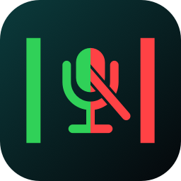
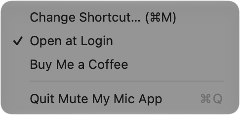
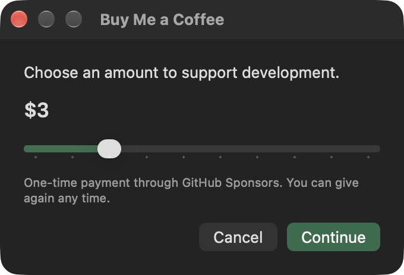
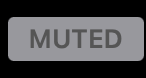

Mute My Mic App
Mute every microphone on your Mac from the menu bar, in one click. Speakers and volume are left alone.
First time only: right-click the app and choose Open. macOS asks because this build is not notarized. After that it opens normally.
See it in action


How to use it
- Open the app. It starts muted, so every microphone on your Mac is already off.
-
Left-click the status item to toggle.

grey means every input is off, while red means you are live. - Press ⌘M from anywhere. The shortcut is rebindable, and Open at Login is on by default.
What it does
- Toggles every Core Audio input at once, with a click or ⌘M
- Leaves speakers and output volume untouched
- Starts muted and remembers what you chose
- Catches devices that appear later, like a Bluetooth headset mic
- Lives in the menu bar, so there is no Dock icon in the way
Why it is honest about muting
Mute is best-effort through Core Audio properties, not a kernel driver. It sets the input mute and input volume on every device that has an input scope, and re-applies that state when devices change. No absolute guarantees are claimed, because none can be made.